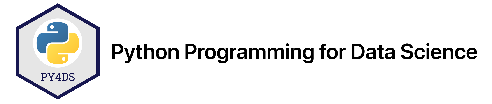
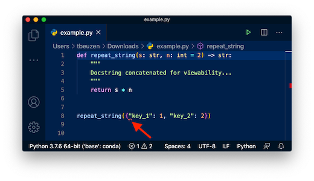
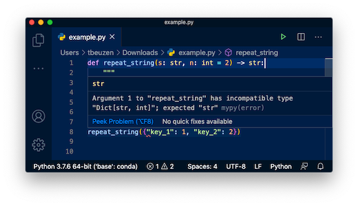

Chapter 2: Loops & Functions
Contents

Chapter 2: Loops & Functions#
Chapter Outline
Chapter Learning Objectives#
Write
forandwhileloops in Python.Identify iterable datatypes which can be used in
forloops.Create a
list,dictionary, orsetusing comprehension.Write a
try/exceptstatement.Define a function and an anonymous function in Python.
Describe the difference between positional and keyword arguments.
Describe the difference between local and global arguments.
Apply the
DRY principleto write modular code.Assess whether a function has side effects.
Write a docstring for a function that describes parameters, return values, behaviour and usage.
1. for Loops#
For loops allow us to execute code a specific number of times.
for n in [2, 7, -1, 5]:
print(f"The number is {n} and its square is {n**2}")
print("I'm outside the loop!")
The number is 2 and its square is 4
The number is 7 and its square is 49
The number is -1 and its square is 1
The number is 5 and its square is 25
I'm outside the loop!
The main points to notice:
Keyword
forbegins the loop. Colon:ends the first line of the loop.Block of code indented is executed for each value in the list (hence the name “for” loops)
The loop ends after the variable
nhas taken all the values in the listWe can iterate over any kind of “iterable”:
list,tuple,range,set,string.An iterable is really just any object with a sequence of values that can be looped over. In this case, we are iterating over the values in a list.
word = "Python"
for letter in word:
print("Gimme a " + letter + "!")
print(f"What's that spell?!! {word}!")
Gimme a P!
Gimme a y!
Gimme a t!
Gimme a h!
Gimme a o!
Gimme a n!
What's that spell?!! Python!
A very common pattern is to use for with the range(). range() gives you a sequence of integers up to some value (non-inclusive of the end-value) and is typically used for looping.
range(10)
range(0, 10)
list(range(10))
[0, 1, 2, 3, 4, 5, 6, 7, 8, 9]
for i in range(10):
print(i)
0
1
2
3
4
5
6
7
8
9
We can also specify a start value and a skip-by value with range:
for i in range(1, 101, 10):
print(i)
1
11
21
31
41
51
61
71
81
91
We can write a loop inside another loop to iterate over multiple dimensions of data:
for x in [1, 2, 3]:
for y in ["a", "b", "c"]:
print((x, y))
(1, 'a')
(1, 'b')
(1, 'c')
(2, 'a')
(2, 'b')
(2, 'c')
(3, 'a')
(3, 'b')
(3, 'c')
list_1 = [0, 1, 2]
list_2 = ["a", "b", "c"]
for i in range(3):
print(list_1[i], list_2[i])
0 a
1 b
2 c
There are many clever ways of doing these kinds of things in Python. When looping over objects, I tend to use zip() and enumerate() quite a lot in my work. zip() returns a zip object which is an iterable of tuples.
for i in zip(list_1, list_2):
print(i)
(0, 'a')
(1, 'b')
(2, 'c')
We can even “unpack” these tuples directly in the for loop:
for i, j in zip(list_1, list_2):
print(i, j)
0 a
1 b
2 c
enumerate() adds a counter to an iterable which we can use within the loop.
for i in enumerate(list_2):
print(i)
(0, 'a')
(1, 'b')
(2, 'c')
for n, i in enumerate(list_2):
print(f"index {n}, value {i}")
index 0, value a
index 1, value b
index 2, value c
We can loop through key-value pairs of a dictionary using .items(). The general syntax is for key, value in dictionary.items().
courses = {521 : "awesome",
551 : "riveting",
511 : "naptime!"}
for course_num, description in courses.items():
print(f"DSCI {course_num}, is {description}")
DSCI 521, is awesome
DSCI 551, is riveting
DSCI 511, is naptime!
We can even use enumerate() to do more complex un-packing:
for n, (course_num, description) in enumerate(courses.items()):
print(f"Item {n}: DSCI {course_num}, is {description}")
Item 0: DSCI 521, is awesome
Item 1: DSCI 551, is riveting
Item 2: DSCI 511, is naptime!
2. while loops#
We can also use a while loop to excute a block of code several times. But beware! If the conditional expression is always True, then you’ve got an infintite loop!
n = 10
while n > 0:
print(n)
n -= 1
print("Blast off!")
10
9
8
7
6
5
4
3
2
1
Blast off!
Let’s read the while statement above as if it were in English. It means, “While n is greater than 0, display the value of n and then decrement n by 1. When you get to 0, display the word Blast off!”
For some loops, it’s hard to tell when, or if, they will stop! Take a look at the Collatz conjecture. The conjecture states that no matter what positive integer n we start with, the sequence will always eventually reach 1 - we just don’t know how many iterations it will take.
n = 11
while n != 1:
print(int(n))
if n % 2 == 0: # n is even
n = n / 2
else: # n is odd
n = n * 3 + 1
print(int(n))
11
34
17
52
26
13
40
20
10
5
16
8
4
2
1
Hence, in some cases, you may want to force a while loop to stop based on some criteria, using the break keyword.
n = 123
i = 0
while n != 1:
print(int(n))
if n % 2 == 0: # n is even
n = n / 2
else: # n is odd
n = n * 3 + 1
i += 1
if i == 10:
print(f"Ugh, too many iterations!")
break
123
370
185
556
278
139
418
209
628
314
Ugh, too many iterations!
The continue keyword is similar to break but won’t stop the loop. Instead, it just restarts the loop from the top.
n = 10
while n > 0:
if n % 2 != 0: # n is odd
n = n - 1
continue
break # this line is never executed because continue restarts the loop from the top
print(n)
n = n - 1
print("Blast off!")
10
8
6
4
2
Blast off!
3. Comprehensions#
Comprehensions allow us to build lists/tuples/sets/dictionaries in one convenient, compact line of code. I use these quite a bit! Below is a standard for loop you might use to iterate over an iterable and create a list:
subliminal = ['Tom', 'ingests', 'many', 'eggs', 'to', 'outrun', 'large', 'eagles', 'after', 'running', 'near', '!']
first_letters = []
for word in subliminal:
first_letters.append(word[0])
print(first_letters)
['T', 'i', 'm', 'e', 't', 'o', 'l', 'e', 'a', 'r', 'n', '!']
List comprehension allows us to do this in one compact line:
letters = [word[0] for word in subliminal] # list comprehension
letters
['T', 'i', 'm', 'e', 't', 'o', 'l', 'e', 'a', 'r', 'n', '!']
We can make things more complicated by doing multiple iteration or conditional iteration:
[(i, j) for i in range(3) for j in range(4)]
[(0, 0),
(0, 1),
(0, 2),
(0, 3),
(1, 0),
(1, 1),
(1, 2),
(1, 3),
(2, 0),
(2, 1),
(2, 2),
(2, 3)]
[i for i in range(11) if i % 2 == 0] # condition the iterator, select only even numbers
[0, 2, 4, 6, 8, 10]
[-i if i % 2 else i for i in range(11)] # condition the value, -ve odd and +ve even numbers
[0, -1, 2, -3, 4, -5, 6, -7, 8, -9, 10]
There is also set comprehension:
words = ['hello', 'goodbye', 'the', 'antidisestablishmentarianism']
y = {word[-1] for word in words} # set comprehension
y # only has 3 elements because a set contains only unique items and there would have been two e's
{'e', 'm', 'o'}
Dictionary comprehension:
word_lengths = {word:len(word) for word in words} # dictionary comprehension
word_lengths
{'hello': 5, 'goodbye': 7, 'the': 3, 'antidisestablishmentarianism': 28}
Tuple comprehension doesn’t work as you might expect… We get a “generator” instead (more on that later).
y = (word[-1] for word in words) # this is NOT a tuple comprehension - more on generators later
print(y)
<generator object <genexpr> at 0x106855a80>
4. try / except#
Above: the Blue Screen of Death at a Nine Inch Nails concert! Source: cnet.com.
If something goes wrong, we don’t want our code to crash - we want it to fail gracefully. In Python, this can be accomplished using try/except. Here is a basic example:
this_variable_does_not_exist
print("Another line") # code fails before getting to this line
---------------------------------------------------------------------------
NameError Traceback (most recent call last)
Cell In[29], line 1
----> 1 this_variable_does_not_exist
2 print("Another line") # code fails before getting to this line
NameError: name 'this_variable_does_not_exist' is not defined
try:
this_variable_does_not_exist
except:
pass # do nothing
print("You did something bad! But I won't raise an error.") # print something
print("Another line")
You did something bad! But I won't raise an error.
Another line
Python tries to execute the code in the try block. If an error is encountered, we “catch” this in the except block (also called try/catch in other languages). There are many different error types, or exceptions - we saw NameError above.
5/0 # ZeroDivisionError
Ok, so there are apparently a bunch of different errors one could run into. With try/except you can also catch the exception itself:
try:
this_variable_does_not_exist
except Exception as ex:
print("You did something bad!")
print(ex)
print(type(ex))
You did something bad!
name 'this_variable_does_not_exist' is not defined
<class 'NameError'>
In the above, we caught the exception and assigned it to the variable ex so that we could print it out. This is useful because you can see what the error message would have been, without crashing your program. You can also catch specific exceptions types. This is typically the recommended way to catch errors, you want to be specific in catching your error so you know exactly where and why your code failed.
try:
this_variable_does_not_exist # name error
# (1, 2, 3)[0] = 1 # type error
# 5/0 # ZeroDivisionError
except TypeError:
print("You made a type error!")
except NameError:
print("You made a name error!")
except:
print("You made some other sort of error")
You made a name error!
The final except would trigger if the error is none of the above types, so this sort of has an if/elif/else feel to it. There is also an optional else and finally keyword (which I almost never used), but you can read more about here.
try:
this_variable_does_not_exist
except:
print("The variable does not exist!")
finally:
print("I'm printing anyway!")
The variable does not exist!
I'm printing anyway!
We can also write code that raises an exception on purpose, using raise:
def add_one(x): # we'll get to functions in the next section
return x + 1
def add_one(x):
if not isinstance(x, float) and not isinstance(x, int):
raise TypeError(f"Sorry, x must be numeric, you entered a {type(x)}.")
return x + 1
This is useful when your function is complicated and would fail in a complicated way, with a weird error message. You can make the cause of the error much clearer to the user of the function. If you do this, you should ideally describe these exceptions in the function documentation, so a user knows what to expect if they call your function.
Finally, we can even define our own exception types. We do this by inheriting from the Exception class - we’ll explore classes and inheritance more in the next chapter!
class CustomAdditionError(Exception):
pass
def add_one(x):
if not isinstance(x, float) and not isinstance(x, int):
raise CustomAdditionError("Sorry, x must be numeric")
return x + 1
5. Functions#
A function is a reusable piece of code that can accept input parameters, also known as “arguments”. For example, let’s define a function called square which takes one input parameter n and returns the square n**2:
def square(n):
n_squared = n**2
return n_squared
square(2)
4
square(100)
10000
square(12345)
152399025
Functions begin with the def keyword, then the function name, arguments in parentheses, and then a colon (:). The code executed by the function is defined by indentation. The output or “return” value of the function is specified using the return keyword.
Side Effects & Local Variables#
When you create a variable inside a function, it is local, which means that it only exists inside the function. For example:
def cat_string(str1, str2):
string = str1 + str2
return string
cat_string('My name is ', 'Tom')
'My name is Tom'
If a function changes the variables passed into it, then it is said to have side effects. For example:
def silly_sum(my_list):
my_list.append(0)
return sum(my_list)
l = [1, 2, 3, 4]
out = silly_sum(l)
out
10
The above looks like what we wanted? But wait… it changed our l object…
l
[1, 2, 3, 4, 0]
If your function has side effects like this, you must mention it in the documentation (which we’ll touch on later in this chapter).
Null Return Type#
If you do not specify a return value, the function returns None when it terminates:
def f(x):
x + 1 # no return!
if x == 999:
return
print(f(0))
None
Optional & Required Arguments#
Sometimes it is convenient to have default values for some arguments in a function. Because they have default values, these arguments are optional, and are hence called “optional arguments”. For example:
def repeat_string(s, n=2):
return s*n
repeat_string("mds", 2)
'mdsmds'
repeat_string("mds", 5)
'mdsmdsmdsmdsmds'
repeat_string("mds") # do not specify `n`; it is optional
'mdsmds'
Ideally, the default value for optional arguments should be carefully chosen. In the function above, the idea of “repeating” something makes me think of having 2 copies, so n=2 feels like a reasonable default.
You can have any number of required arguments and any number of optional arguments. All the optional arguments must come after the required arguments. The required arguments are mapped by the order they appear. The optional arguments can be specified out of order when using the function.
def example(a, b, c="DEFAULT", d="DEFAULT"):
print(a, b, c, d)
example(1, 2, 3, 4)
1 2 3 4
Using the defaults for c and d:
example(1, 2)
1 2 DEFAULT DEFAULT
Specifying c and d as keyword arguments (i.e. by name):
example(1, 2, c=3, d=4)
1 2 3 4
Specifying only one of the optional arguments, by keyword:
example(1, 2, c=3)
1 2 3 DEFAULT
Specifying all the arguments as keyword arguments, even though only c and d are optional:
example(a=1, b=2, c=3, d=4)
1 2 3 4
Specifying c by the fact that it comes 3rd (I do not recommend this because I find it is confusing):
example(1, 2, 3)
1 2 3 DEFAULT
Specifying the optional arguments by keyword, but in the wrong order (this can also be confusing, but not so terrible - I am fine with it):
example(1, 2, d=4, c=3)
1 2 3 4
Specifying the non-optional arguments by keyword (I am fine with this):
example(a=1, b=2)
1 2 DEFAULT DEFAULT
Specifying the non-optional arguments by keyword, but in the wrong order (not recommended, I find it confusing):
example(b=2, a=1)
1 2 DEFAULT DEFAULT
Specifying keyword arguments before non-keyword arguments (this throws an error):
Multiple Return Values#
In many programming languages, functions can only return one object. That is technically true in Python too, but there is a “workaround”, which is to return a tuple.
def sum_and_product(x, y):
return (x + y, x * y)
sum_and_product(5, 6)
(11, 30)
The parentheses can be omitted (and often are), and a tuple is implicitly returned as defined by the use of the comma:
def sum_and_product(x, y):
return x + y, x * y
sum_and_product(5, 6)
(11, 30)
It is common to immediately unpack a returned tuple into separate variables, so it really feels like the function is returning multiple values:
s, p = sum_and_product(5, 6)
s
11
p
30
As an aside, it is conventional in Python to use _ for values you don’t want:
s, _ = sum_and_product(5, 6)
s
11
_
11
Functions with Arbitrary Number of Arguments#
You can also call/define functions that accept an arbitrary number of positional or keyword arguments using *args and **kwargs.
def add(*args):
print(args)
return sum(args)
add(1, 2, 3, 4, 5, 6)
(1, 2, 3, 4, 5, 6)
21
def add(**kwargs):
print(kwargs)
return sum(kwargs.values())
add(a=3, b=4, c=5)
{'a': 3, 'b': 4, 'c': 5}
12
6. Functions as a Data Type#
In Python, functions are actually a data type:
def do_nothing(x):
return x
type(do_nothing)
function
print(do_nothing)
<function do_nothing at 0x106884790>
This means you can pass functions as arguments into other functions.
def square(y):
return y**2
def evaluate_function_on_x_plus_1(fun, x):
return fun(x+1)
evaluate_function_on_x_plus_1(square, 5)
36
So what happened above?
fun(x+1)becomessquare(5+1)square(6)becomes36
7. Anonymous Functions#
There are two ways to define functions in Python. The way we’ve beenusing up until now:
def add_one(x):
return x+1
add_one(7.2)
8.2
Or by using the lambda keyword:
add_one = lambda x: x+1
type(add_one)
function
add_one(7.2)
8.2
The two approaches above are identical. The one with lambda is called an anonymous function. Anonymous functions can only take up one line of code, so they aren’t appropriate in most cases, but can be useful for smaller things.
evaluate_function_on_x_plus_1(lambda x: x ** 2, 5)
36
Above:
First,
lambda x: x**2evaluates to a value of typefunction(otice that this function is never given a name - hence “anonymous functions”).Then, the function and the integer
5are passed intoevaluate_function_on_x_plus_1At which point the anonymous function is evaluated on
5+1, and we get36.
8. DRY Principle, Designing Good Functions#
DRY stands for Don’t Repeat Yourself. See the relevant Wikipedia article for more about this principle.
As an example, consider the task of turning each element of a list into a palindrome.
names = ["milad", "tom", "tiffany"]
name = "tom"
name[::-1] # creates a slice that starts at the end and moves backwards, syntax is [begin:end:step]
'mot'
names_backwards = list()
names_backwards.append(names[0] + names[0][::-1])
names_backwards.append(names[1] + names[1][::-1])
names_backwards.append(names[2] + names[2][::-1])
names_backwards
['miladdalim', 'tommot', 'tiffanyynaffit']
The code above is gross, terrible, yucky code for several reasons:
It only works for a list with 3 elements;
It only works for a list named
names;If we want to change its functionality, we need to change 3 similar lines of code (Don’t Repeat Yourself!!);
It is hard to understand what it does just by looking at it.
Let’s try this a different way:
names_backwards = list()
for name in names:
names_backwards.append(name + name[::-1])
names_backwards
['miladdalim', 'tommot', 'tiffanyynaffit']
The above is slightly better and we have solved problems (1) and (3). But let’s create a function to make our life easier:
def make_palindromes(names):
names_backwards = list()
for name in names:
names_backwards.append(name + name[::-1])
return names_backwards
make_palindromes(names)
['miladdalim', 'tommot', 'tiffanyynaffit']
Okay, this is even better. We have now also solved problem (2), because you can call the function with any list, not just names. For example, what if we had multiple lists:
names1 = ["milad", "tom", "tiffany"]
names2 = ["apple", "orange", "banana"]
make_palindromes(names1)
['miladdalim', 'tommot', 'tiffanyynaffit']
make_palindromes(names2)
['appleelppa', 'orangeegnaro', 'bananaananab']
Designing Good Functions#
How far you go and how you choose to apply the DRY principle is up to you and the programming context. These decisions are often ambiguous. Should make_palindromes() be a function if I’m only ever doing it once? Twice? Should the loop be inside the function, or outside? Should there be TWO functions, one that loops over the other?
In my personal opinion, make_palindromes() does a bit too much to be understandable. I prefer this:
def make_palindrome(name):
return name + name[::-1]
make_palindrome("milad")
'miladdalim'
From here, if we want to “apply make_palindrome to every element of a list” we could use list comprehension:
[make_palindrome(name) for name in names]
['miladdalim', 'tommot', 'tiffanyynaffit']
There is also the in-built map() function which does exactly this, applies a function to every element of a sequence:
list(map(make_palindrome, names))
['miladdalim', 'tommot', 'tiffanyynaffit']
9. Generators#
Recall list comprehension from earlier in the chapter:
[n for n in range(10)]
[0, 1, 2, 3, 4, 5, 6, 7, 8, 9]
Comprehensions evaluate the entire expression at once, and then returns the full data product. Sometimes, we want to work with just one part of our data at a time, for example, when we can’t fit all of our data in memory. For this, we can use generators.
(n for n in range(10))
<generator object <genexpr> at 0x1068a8120>
Notice that we just created a generator object. Generator objects are like a “recipe” for generating values. They don’t actually do any computation until they are asked to. We can get values from a generator in three main ways:
Using
next()Using
list()Looping
gen = (n for n in range(10))
next(gen)
0
next(gen)
1
Once the generator is exhausted, it will no longer return values:
We can see all the values of a generator using list() but this defeats the purpose of using a generator in the first place:
gen = (n for n in range(10))
list(gen)
[0, 1, 2, 3, 4, 5, 6, 7, 8, 9]
Finally, we can loop over generator objects too:
gen = (n for n in range(10))
for i in gen:
print(i)
0
1
2
3
4
5
6
7
8
9
Above, we saw how to create a generator object using comprehension syntax but with parentheses. We can also create a generator using functions and the yield keyword (instead of the return keyword):
def gen():
for n in range(10):
yield (n, n ** 2)
g = gen()
print(next(g))
print(next(g))
print(next(g))
(0, 0)
(1, 1)
(2, 4)
Below is some real-world motivation of a case where a generator might be useful. Say we want to create a list of dictionaries containing information about houses in Canada.
10. Docstrings#
One problem we never really solved when talking about writing good functions was: “4. It is hard to understand what it does just by looking at it”. This brings up the idea of function documentation, called “docstrings”. The docstring goes right after the def line and is wrapped in triple quotes """.
def make_palindrome(string):
"""Turns the string into a palindrome by concatenating itself with a reversed version of itself."""
return string + string[::-1]
In Python we can use the help() function to view another function’s documentation. In IPython/Jupyter, we can use ? to view the documentation string of any function in our environment.
make_palindrome?
But, even easier than that, if your cursor is in the function parentheses, you can use the shortcut shift + tab to open the docstring at will.
# make_palindrome('uncomment this line and try pressing shift+tab here.')
Docstring Structure#
General docstring convention in Python is described in PEP 257 - Docstring Conventions. There are many different docstring style conventions used in Python. The exact style you use can be important for helping you to render your documentation, or for helping your IDE parse your documentation. Common styles include:
Single-line: If it’s short, then just a single line describing the function will do (as above).
reST style: see here.
NumPy style: see here. (RECOMMENDED! and MDS-preferred)
Google style: see here.
The NumPy style:
def function_name(param1, param2, param3):
"""First line is a short description of the function.
A paragraph describing in a bit more detail what the
function does and what algorithms it uses and common
use cases.
Parameters
----------
param1 : datatype
A description of param1.
param2 : datatype
A description of param2.
param3 : datatype
A longer description because maybe this requires
more explanation and we can use several lines.
Returns
-------
datatype
A description of the output, datatypes and behaviours.
Describe special cases and anything the user needs to
know to use the function.
Examples
--------
>>> function_name(3,8,-5)
2.0
"""
def make_palindrome(string):
"""Turns the string into a palindrome by concatenating
itself with a reversed version of itself.
Parameters
----------
string : str
The string to turn into a palindrome.
Returns
-------
str
string concatenated with a reversed version of string
Examples
--------
>>> make_palindrome('tom')
'tommot'
"""
return string + string[::-1]
make_palindrome?
Docstrings with Optional Arguments#
When specifying function arguments, we specify the defaults for optional arguments:
# scipy style
def repeat_string(s, n=2):
"""
Repeat the string s, n times.
Parameters
----------
s : str
the string
n : int, optional
the number of times, by default = 2
Returns
-------
str
the repeated string
Examples
--------
>>> repeat_string("Blah", 3)
"BlahBlahBlah"
"""
return s * n
Type Hints#
Type hinting is exactly what it sounds like, it hints at the data type of function arguments. You can indicate the type of an argument in a function using the syntax argument : dtype, and the type of the return value using def func() -> dtype. Let’s see an example:
# NumPy style
def repeat_string(s: str, n: int = 2) -> str: # <---- note the type hinting here
"""
Repeat the string s, n times.
Parameters
----------
s : str
the string
n : int, optional (default = 2)
the number of times
Returns
-------
str
the repeated string
Examples
--------
>>> repeat_string("Blah", 3)
"BlahBlahBlah"
"""
return s * n
repeat_string?
Type hinting just helps your users and IDE identify dtypes and identify bugs. It’s just another level of documentation. They do not force users to use that date type, for example, I can still pass an dict to repeat_string if I want to:
Most IDE’s are clever enough to even read your type hinting and warn you if you’re using a different dtype in the function, e.g., this VScode screenshot:
 